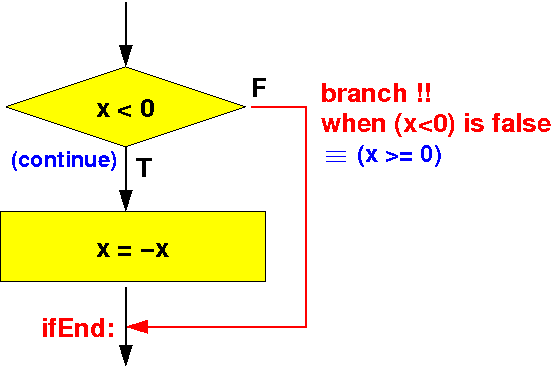
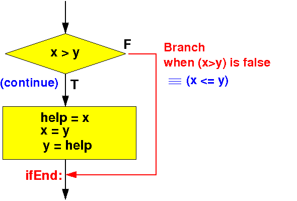

I want to make sure you understand the effect of the combination of the cmp + blt assembler instructions:
cmp rN, #n // compares rN with n, setup flags blt label // If the flags indicate that ( rN < n ) // then branch to label next-instr // Otherwise, continue here with the "next-instr" |
And the 2nd compare instruction format is:
cmp rN, rM // compares rN with n, setup flags blt label // if the flags indicate that ( rN < rM ) // then branch to label next-instr // Otherwise, continue here with the "next-instr" |
The same explanation applies with the other conditional branch instructions !
We can combinate any one of the 2 compare instructions with any one of the 6 conditional brannch instructions:
cmp rN, #n // compares rN with n
// sets the flags according to comparison
cmp rN, rM // compares rN with rM
// sets the flags according to comparison
beq label // if ( rN == {n or rM} ) branch to label
bne label // if ( rN != {n or rM} ) branch to label
blt label // if ( rN < {n or rM} ) branch to label
ble label // if ( rN <= {n or rM} ) branch to label
bgt label // if ( rN > {n or rM} ) branch to label
bge label // if ( rN >= {n or rM} ) branch to label
|
Furthermore, there is an unconditional branch instruction b label that always branches to the location label.
The inverse of the comparison operations:
Comparison Inverse
--------------------------------------------------
x == y x != y !(x == y) ≡ x != y
x != y x == y !(x != y) ≡ x == y
x < y x >= y !(x < y) ≡ x >= y
x <= y x > y !(x <= y) ≡ x > y
x > y x <= y !(x > y) ≡ x <= y
x >= y x < y !(x >= y) ≡ x < y
|
|
Flow chart of the if-statement
if ( condition ) ----> |
{ |
statement(s); +--------------+ FALSE
} | condition |--------+
+--------------+ |
| |
| TRUE |
| |
V |
statement(s) |
| |
| |
V |
+<---------------+
|
V
|
The compiler will output the following assembler codes to realise the program flow specified by an if-statement:
Assembler codes to evaluate "condition" (use cmp instruction)
|
V FALSE
Branch on FALSE outcome of "condition" to label L: ----+
| |
| (true) |
| |
V |
Assembler codes to execute "statement(s)" |
| |
| |
V |
L: +<----------------------------------------+
|
V
|
I will illustrate the translation process with an example...
Example if-statement:
int x;
if ( x < 0 )
x = -x;
|
For brevity, I will omit the variable definition from now on (of x) because we have seen such definition many times already...
if ( x < 0 )
x = -x;
|
The corresponding flow chart for this if-statement is:
|  |
|
if ( x < 0 )
x = -x;
|
The corresponding flow chart for this if-statement is:
The branch condition is NOT ( x < 0 ) ≡ ( x >= 0 ) - now translate into assembler !
main: movw r0, #:lower16:x movt r0, #:upper16:x // r0 = addr(x) ldr r1, [r0] // r1 = x cmp r1, #0 // Compare x against 0 bge IfEnd // if (x >= 0) branch to ifEnd // x = -x; (1) compute RHS movw r0, #:lower16:x movt r0, #:upper16:x // r0 = addr(x) ldr r1, [r0] // r1 = x neg r1, r1 // r1 = 0 - r1 (negate) // x = -x; (2) store r1 into LHS movw r0, #:lower16:x movt r0, #:upper16:x // r0 = addr(x) str r1, [r0] // Update x with -x in r0 IfEnd: .data x: .4byte -4 // x = -4 -- try +4 also .end |
DEMO: /home/cs255001/demo/asm/6-if/if1.s
main: movw r0, #:lower16:x movt r0, #:upper16:x // r0 = addr(x) ldr r1, [r0] // r1 = x cmp r1, #0 // Compare x ? 0 bge IfEnd // Branch to "ifEnd" if x >= 0 // (We don't need to fetch x, since r1 = x ! neg r1, r1 // r1 = 0 - r1 (negate) // Note: r0 still contains addr(x) ! str r1, [r0] // Update x with -x in r0 IfEnd: .data x: .4byte -4 // x = -4 -- try +4 also .end |
I do not recommend/require that you optimize (because it's more error prone)
Example 2: making sure that x ≤ y:
int x;
int y;
int help;
// If-statement to make sure: x ≤ y
if ( x > y ) // This is the classic "swap(x,y)" algorithm
{
help = x;
x = y;
y = help;
}
|
Comment: this if-statement is part of the Bubble Sort algorithm
if ( x > y )
{
help = x;
x = y;
y = help;
}
|
The corresponding flow chart for this if-statement is:
|  |
I will write the code in class - you do not need the help variable (use a register instead) !
main:
movw r0, #:lower16:x
movt r0, #:upper16:x // r0 = addr(x)
ldr r1, [r0] // r1 = x
movw r2, #:lower16:y
movt r2, #:upper16:y // r2 = addr(y)
ldr r3, [r2] // r3 = y
cmp r1, r3 // Compare x against y
ble ifEnd // if ( x <= y ) branch to ifEnd
/* ------------- swap x and y ------------------------ */
// help = x; (I use r10 as the help variable
movw r0, #:lower16:x
movt r0, #:upper16:x // r0 = addr(x)
ldr r10, [r0] // r10 = x (i,.e.: help = x)
// x = y;
movw r0, #:lower16:y
movt r0, #:upper16:y // r0 = addr(y)
ldr r1, [r0] // r1 = y
movw r0, #:lower16:x
movt r0, #:upper16:x // r0 = addr(x)
str r1, [r0] // y = x
// y = help;
movw r0, #:lower16:y
movt r0, #:upper16:y // r0 = addr(y)
str r10, [r0] // y = r10 (i.e.: y = help)
ifEnd:
/* --------------------------------------------------
Begin of the permanent program variables
-------------------------------------------------- */
.data
x: .4byte 9 // x = 9 -- try a value smaller that 4
y: .4byte 4 // y = 4
.end
|
DEMO: /home/cs255001/demo/asm/6-if/if2.s
main:
movw r0, #:lower16:x
movt r0, #:upper16:x // r0 = addr(x)
ldr r1, [r0] // r1 = copy of x
movw r2, #:lower16:y
movt r2, #:upper16:y // r2 = addr(y)
ldr r3, [r2] // r3 = copy of y
cmp r1, r3 // Compare x against y
ble ifEnd // if ( x <= y ) branch to ifEnd
// Swap x and y using copies of x and y in R1 and R3
str r3, [r0] // var x in memory = copy of y in R3
str r1, [r2] // var y in memory = copy of x in R1
ifEnd:
/* --------------------------------------------------
Begin of the permanent program variables
-------------------------------------------------- */
.data
x: .4byte 9 // x = 9 -- try a value smaller that 4
y: .4byte 4 // y = 4
.end
|
DEMO: /home/cs255001/demo/asm/6-if/if2.s